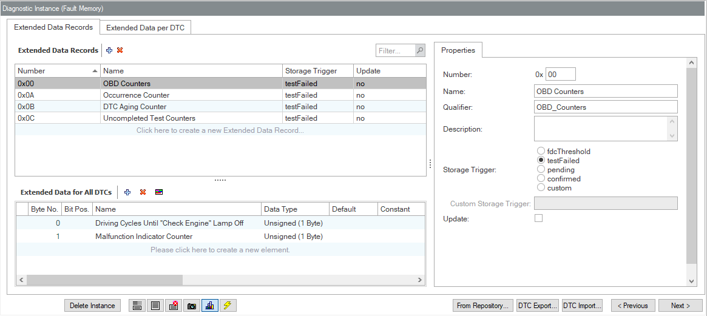

contains 2 top-level TABs, each with a main area and a details area to the right.
contains 2 top-level TABs, each with a main area and a details area to the right.The following describes the user interface of the specific AUTOSAR data model available since CANdelaStudio 13, see the AUTOSAR Fault Memory GUI.
See also the Extended Data Record Data Model and Extended Data Record Operations.
Overview of Extended Data dialogs (AUTOSAR Fault Memory):
[EDUI-R010] The Extended Data Records page contains 2 top-level TABs, each with a main area and a details area to the right.

Extended Data Records
[SRUI-R030] CANdelaStudio shows the Extended Data dialogs iff. any Protocol Service contains a SimpleProxyComp with semantics